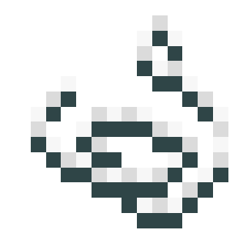

About
The rope ladder is a decorative block that can be hung from blocks!
Crafting
The rope ladder can be crafted with the appropriate wood type and some string:




Planter Box
| Renewable | Yes (Crafting) |
| Stackable | Yes (64) |
| Tool | Any tool, but the axe is the quickest! |
| Blast Resistance | 0.4 |
| Hardness | 0.4 |
| Luminous | No |
| Transparent | No |
| Catches fire from lava | No |